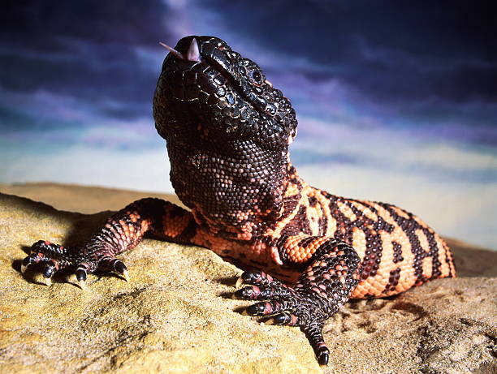

Population status on the Gila Monster is complicated due to the fact that the spend most of their time underground. U.S. Fish and Wildlife Service have opportunistically monitored Gila Monsters in the vicinity of San Bernardino and Leslie Canyon. from 2000-2017. Lizards were captured, measured, weighed, sexed, photographed, PIT-tagged, and then released from where they got captured. Data from 222 different Gila Monsters provided insight to individual movement, home range, food habbits, and survival.
The Gila Monster is a large lizard with a distinctive pattern of dark spots on a light background. It has a thick body, short legs, and a long tail. The Gila Monster's Gila monsters can measure up to about 22 inches (56 centimeters) in total length. Gila monsters are black, patterned along their backs with contrasting pink or orange. The Gila Monsters skin is covered in bead-like scales, which gives it a rough texture. The Gila Monster has a large head and a wide mouth, which it uses to catch and eat its prey.
Males compete for mates by engaging in carefully choreographed wrestling matches, in which the biggest and strongest wins.\ Breeding season for Gila monsters is usually in early summer. The female digs a hole, lays a clutch of large, leathery, oval-shaped eggs in the hole, and covers them. Gila monsters are carnivorous and feed on a variety of small animals, including birds, eggs, lizards, and small mammals. They are also known to eat insects and carrion.
Gila Monsters live in deserts and are found in three of the four North American deserts. These lizards can be found throughout southwestern portions of Arizona, Southern Nevada, Southwestern Utah, Eastern California, Southern New Mexico, and down into Sinaloa, Mexico.
Gila monsters mate in the spring, which is also when food is most abundant. In late April to early June, courtship and male-to-male combat takes place. Females lay two to 12 eggs that spend the winter below ground and hatch the next spring after 120 to 150 days. The eggs are not buried very deep, so the heat of the sun incubates them. About four months later, the baby Gila monsters break out of their eggs and crawl to the surface. New hatchlings average about 6 1/2 inches long and about 1.2 ounces in weight. Gila Monsters can live up to 20 years in the wild, and up to 30 years in captivity with the world record for oldes Gila Monster being 36 years old. Gila Monsters are slow-growing and take about 10 years to reach sexual maturity.
Coyotes, foxes, bobcats, hawks and owls are primary predators of the Gila Monster. The young are more susceptible to predation, and some predators dig up and eat the eggs. The Gila Monster has little fear because of the color and pattern which indicate potential danger. People represent the Gila Monster's primary threat through habitat loss by development, illegal poaching, and roadkill.
| Kingdom | Animalia |
|---|---|
| Phylum | Craniata |
| Class | Reptilia |
| Order | Squamata |
| Family | Helodermatidae |
| Genus | Heloderma |